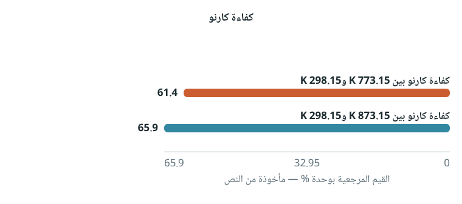

كفاءة كارنو
Carnot efficiency
كفاءة كارنو هي الحد الأعلى النظري لكفاءة أي محرك حراري يعمل بين مستودعين حراريين، وتساوي واحداً ناقص نسبة الحرارة المطلقة للمستودع البارد إلى الساخن، ولا يمكن لأي محرك حقيقي أن يتجاوزها.
كفاءة كارنو η_C هي أعلى كفاءة ممكنة لمحرك حراري يعمل بين مستودع ساخن عند T_H ومستودع بارد عند T_C، وتُعطى بـη_C = 1 − T_C/T_H، حيث الحرارتان بالكلفن. وهي كفاءة دورة كارنو العكوسة، المكوّنة من تمدد وانضغاط أيزوثرميين وأدياباتيين. لا يمكن لأي محرك يعمل بين المستودعين نفسيهما أن يتجاوزها، وهذا نتيجة مباشرة للقانون الثاني. مثال: محرك بخاري يعمل بين 500 °م (773.15 K) و25 °م (298.15 K) له كفاءة كارنو 1 − 298.15/773.15 = 61.4%، بينما الكفاءة الفعلية لمحطات البخار نحو 35–40%.
كيف تعمل الظاهرة؟
المحرك الحراري لا يحوّل الحرارة إلى عمل إلا بمرورها من حرارة أعلى إلى أدنى. فالحرارة الداخلة تُقسم إلى عمل خارج وحرارة مطرودة، ولا يمكن طرد صفر حرارة لأن ذلك يعني أن الغاز يعود إلى حالته الأولى بلا أي أثر في المحيط، وهو ما يخالف القانون الثاني. ودورة كارنو مثالية لأن كل خطوة فيها عكوسة: التمدد الأيزوثرمي يأخذ الحرارة عند أعلى حرارة ممكنة، والانضغاط الأيزوثرمي يطردها عند أدنى حرارة ممكنة، والخطوتان الأدياباتيتان لا تتبادلان حرارة أصلاً. أي انحراف عن ذلك — كخفض الحرارة أثناء أخذ الحرارة — يزيد الإنتروبيا ويقلل العمل المتاح.
العلاقة بالأرقام
η_C = 1 − T_C/T_H، وW = η_C·Q_H، وQ_C = Q_H − W = Q_H·T_C/T_H. والعلاقة بالإنتروبيا: Q_H/T_H = Q_C/T_C في الدورة العكوسة، أي أن الإنتروبيا المأخوذة تساوي المطرودة. مثال عددي: T_H = 773.15 K، T_C = 298.15 K، Q_H = 1 000 MJ → η_C = 0.6144، W = 614.4 MJ، Q_C = 385.6 MJ. والتحقق: 1 000/773.15 = 1.2934 MJ/K و385.6/298.15 = 1.2934 MJ/K — متساويان.
مفاهيم متقاربة
يُفرَّق بين كفاءة كارنو وكفاءة القانون الأول: الأولى تحكمها الحرارتان، والثانية هي نسبة العمل إلى الحرارة الداخلة في آلة معيّنة وقد تكون أقل بكثير. ويُفرَّق بين الكفاءة ومعامل الأداء: الثلاجة الجيدة لها COP قد يبلغ 4، أي أنها تنقل 4 وحدات حرارة لكل وحدة عمل، وهذا لا يخالف كارنو لأن COP ليس كفاءة تحويل. ويُفرَّق بين كارنو وأوتو وديزل: كفاءة أوتو تعتمد على نسبة الانضغاط لا على الحرارتين مباشرة، لكنها تبقى دائماً أقل من كارنو بين الحرارتين نفسيهما.
حدود التطبيق
كفاءة كارنو حد أعلى لا يُبلغ في آلة حقيقية، لأن العمليات الحقيقية غير عكوسة: فروق حرارة محدودة في المبادلات، واحتكاك، وتسرب حراري. ولا تنطبق الصيغة إلا على محرك يعمل بين مستودعين بحرارة ثابتة؛ وفي الآلات التي تتغير فيها حرارة المصدر — كعادم توربين غازي — تُستعمل كفاءة مقارنة بدورة مرجعية. ولا تنطبق على خلايا الوقود أو الخلايا الشمسية، لأنها تحوّل الطاقة مباشرة لا عبر دورة حرارية، ولها حدود مختلفة (كفاءة كارنو لا تحدّ الخلية الشمسية، بل حدّ Shockley-Queisser).

| الكمية | القيمة | المصدر |
|---|---|---|
| كفاءة كارنو بين 773.15 K و298.15 K | 61.4 % | [2] |
| كفاءة كارنو بين 873.15 K و298.15 K | 65.9 % | [2] |
المصادر
- 1 CODATA Value: Boltzmann constant — NIST — CODATA 2022 recommended values (2024). physics.nist.gov/cgi-bin/cuu/Value?k · اطُّلع عليه 2026-11-21
- 2 The International System of Units (SI), 9th edition (2019) — BIPM — Bureau International des Poids et Mesures (2019). www.bipm.org/en/publications/si-brochure · اطُّلع عليه 2026-11-21
- 3 CODATA Value: molar gas constant — NIST — CODATA 2022 recommended values (2024). physics.nist.gov/cgi-bin/cuu/Value?r · اطُّلع عليه 2026-11-21
استشهد بهذا المصطلح
الصيغتان مبنيتان من بيانات الصفحة نفسها: العنوان والتاريخ ورابط النسخة المنشورة.
كفاءة كارنو — Carnot efficiency. (2026). ديوان المعرفة — انفراد. https://infiradev.com/diwan/terms/term-carnot-efficiency.html
@misc{term-carnot-efficiency2026,
title = {كفاءة كارنو},
titleaddon = {Carnot efficiency},
howpublished = {{ديوان المعرفة — انفراد} — مرجع علمي عربي},
year = {2026},
url = {https://infiradev.com/diwan/terms/term-carnot-efficiency.html},
urldate = {2026-11-26},
note = {مراجعة علمية: hermes (مراجعة معتمدة 2026-11-26)}
}
راجعه: hermes (مراجعة معتمدة 2026-11-26) · 2026-11-26 · آخر تحديث 2026-11-21